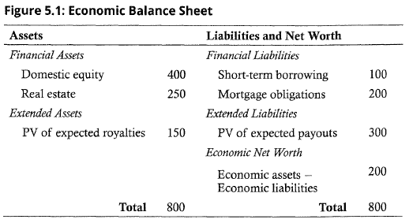

Effective investment governance models
- establish long-term and short-term investment objectives
- allocate rights and responsibilities within the governance structure
- specify processes for creating an investment policy statement (IPS)
- specify processes for creating a strategic asset allocation
- apply a reporting framework to monitor the investment program’s stated goals and objectives
- periodically perform a governance audit
Economic balance sheet

Pension plan is financial asset
Asset allocation approaches
Asset-only
minimum-variance optimization (MVO)
Risk is typically defined as the standard deviation of asset return or deviation from the assigned benchmark.
Liability-relative
Liability-relative approaches focus directly on managing assets in relation to quantifiable liabilities. The focus is on managing the expected return and risk of the surplus.
Risk may be defined as shortfall risk (the probability of insufficient assets to meet the liabilities), a need for additional contributions, or volatility of surplus.
Liability-relative analysis produces an efficient frontier. Acceptable variability of plan’s surplus can be selected on the efficient frontier. MCS shows how a specific allocation may perform over time.
Surplus optimization
This is an extension of MVO in which we determine an efficient frontier based on the surplus with its volatility as our measure of risk, stated either in money or percentage terms. - liability structure fixed
Two-portfolio approach (hedging/return-seeking portfolios approach)
hedging or return-seeking approach
In this approach, we separate the asset portfolio into two sub-portfolios: a hedging portfolio and a return-seeking portfolio - liability structure fixed
There are two limitations of this approach:
- If the funding ratio is less than one, it’s difficult to create a hedging portfolio that completely hedges the liabilities.
- A hedging portfolio may not be available to hedge certain kinds of risk (like earthquakes).
Integrated asset-liability approach
This approach integrates both the assets and the liabilities in a joint optimization method. → asset-liability management → Monte Carlo simulation
Banks, hedge funds with short positions, and insurance companies, however, make decisions about the composition of their liabilities jointly with their asset allocation decisions. There is a continuous feedback loop between the two, which requires a multiperiod model. This is often referred to as an integrated asset-liability approach.
Mortgage debt is variable-interest debt. ALM is appropriate to hedge interest-sensitive debt like mortgage.
Goals-based approach
The investor’s portfolio is composed of sub-portfolios, and each investment goal is addressed individually with these sub-portfolios.
Taxable and tax-exempt investments are part of the opportunity set.
we identify and document “minimum expectations” for each goal, which is the minimum expected return necessary to provide a specified minimum required probability of success over the given time horizon.
The asset allocation is determined by identifying, for each goal, the module that provides the highest expected return with the specified probability of success over the required time horizon. Then the size of the investment in that module is simply the present value of the future goal discounted at the expected return of that module. The portfolio allocation is then the sum of all of the individual investments necessary to achieve each goal.
Risk budgeting
risk-only approach → minimize total risk
Asset allocation can also be conducted with a risk perspective. The types of risk to take, as well as the amount of risk to take, is addressed with risk budgeting. Measuring risk may differ depending on the risk focus, such as volatility of returns or tail risk. These risk budgets specify how risk should be distributed among portfolio assets without regard to asset expected returns. (risk parity approach)
\[ MCTR_{i} = \beta_{i}\sigma_{p} \]
\[ ACTR_{i} = w_{i}MCTR_{i} \]
\[ \sigma_{p} = \Sigma^{n}_{i = 1}{ACTR_{i}} \]

The allocation is optimal because ratios of excess return to risk are equal for all risky asset classes.
Rebalancing
Rebalancing serves to control portfolio risks that have become different from what the investor originally intended.
Volatility

high correlation between classes → narrow corridor
Utility maximization
\[ \text{Utility maximization: } U_{m} = E(R_{m}) - 0.005 * \lambda * \sigma_{m}^{2} \]
\[ \text{Utility maximization: } U_{m} = E(R_{m}) - 0.5 * \lambda * \sigma_{m}^{2} (Decimal) \]
Safety first
\[ \text{Roy's safety first}, RSF = (R_{p} - MAR)/ \sigma_{p} \]
Mean-variance optimization

Criticisms of MVO
Traditional mean-variance analysis assumes that the correlation is constant over time. Correlation tends to increase during the period of volatile market.
GIGO
The quality of the output from the MVO (portfolio allocations) is highly sensitive to the quality of the inputs (i.e., expected returns, variances, and correlations).
MVO is more sensitive to measurement errors in the expected return than to measurement error in correlation and risk.
- improving the quality of the inputs, particularly expected return
- Adding more constraints beyond the budget constraint and the nonnegativity constraint
- resampling
Concentrated asset class allocations (corner-solution problem)
MVO often identifies efficient portfolios that are highly concentrated in a subset of asset classes, with zero allocation to others; in other words, lowest calculated standard deviation is not the same thing as practical diversification.
- improving the quality of the inputs, particularly expected return
- Adding more constraints beyond the budget constraint and the nonnegativity constraint
- resampling
- reverse optimization
- Black-Litterman model
Skewness and kurtosis
MVO analysis, by definition, only looks at the first two moments of the return distribution: expected return and variance; it does not take into account skewness or kurtosis.
- use more sophisticated software that can incorporate other return distribution patterns
Risk diversification
MVO identifies an asset allocation diversified across asset classes but not necessarily the sources of risk.
- factor-based allocation
Ignores liabilities
MVO is a single-period framework that does not take into account interim cash flows or the serial correlation of asset returns from one time period to the next.
- directly model the liabilities as part of the MVO
- use Monte Carlo simulation
Single-period framework
Reverse optimization

The asset allocation weights are inputs for reverse optimization. The asset allocation weights are outputs for MVO.
Black-Litterman model
Black-Litterman model = reverse optimization + view
Manager can use his view on the market.
Adding more constraints
Resampled MVO
time horizon별로 잘라서 efficient frontier 만들어서 average
Resampling can also be used to address the GIGO and highly concentrated issues:
- Resampling starts with the basic MVO using the best estimates of expected returns sigma, and correlations to generate the efficient frontier and associated asset allocations for each point on the frontier.
- Then Monte Carlo simulation is used to generate thousands of random variations for the inputs around the initial estimates, resulting in efficient frontier and associated asset allocations for each point on the frontier.
- The resampled efficient frontier is an average of all the simulated efficient frontier, and the asset allocation for any single point on the resampled efficient frontier is an average of the possible portfolios for that point on the frontier.
Resampled efficient frontier is more stable over time.
Resampled efficient frontier provides more diversified portfolio.
Non-normal distributions (skewness and kurtosis)

Monte Carlo Simulation
MCS can be used to:
- Address the limitations of MVO as a single-period model and the related issues of rebalancing and taxes in a multiperiod framework.
- Guide individual investors to identify their risk tolerance level.
Clients planning for retirement can visually see how often and when they are likely to run out of money.
It allows for probability estimates of success.
It takes multi-period perspective to determine probabilities of meeting the terminal value.
It allows for the path dependency issues associated with making disruptions for living expenses.
Manager can compute path-dependent terminal values.
Manager can simulate multi-period situations.
Illiquid assets
Less-liquid asset classes like direct real estate, infrastructure, and private equity require a liquidity return premium to compensate the investor for the additional liquidity risk.
- There are few indexes available that accurately track these illiquid investments, making it harder to find data to use for estimating return, risk, and correlations.
- Even where indexes exist to provide return data, they are generally not investable as a passive alternative to active management of these asset classes.
- The risk-return characteristics of a specific real estate, private equity, or infrastructure investment are different from those of its asset class.
To address these issues:
- Exclude illiquid asset classes when running an MVO, but use them to meet separately set target asset allocations.
- Include the illiquid asset classes in MVO and model the inputs of the specific (not asset class) investments you plan to use (i.e., the risk estimate will be based on both nonsystematic and systematic).
- Include the illiquid asset classes in MVO using highly diversified asset class inputs, recognizing that the actual investments made may have different characteristics. This violates the requirement that asset classes be mutually exclusive and biases the reported correlations upward.
Heuristic and other approaches
120 minus your age
This one is easy. It relates your age to your allocation to equities so that 120 - age = % allocation to equities, with the remainder going to fixed incomes.
60/40 split
Endowment model and Yale model
Under this approach, you allocate larger amounts to alternative investment asset classes.
Risk parity
The idea with the risk parity asset allocation approach is that diversification is achieved by ensuring that each asset class contributes the same amount to the total portfolio risk. The criticism of this approach is that it ignores expected returns and focuses only on risk.
risk parity is to minimize total risk of the portfolio.
Risk parity is highly sensitive to opportunity sets.
1/N rule
Constraints when choosing an optimal asset allocation
- Asset size
- liquidity needs
- time horizon
- regulatory and other external constraints
- tax considerations
Adjusting the strategic asset allocation
- change in goals
- change in constraints
- change in beliefs
- target-date fund (glide-path)
Tactical asset allocation
Evaluation
- Comparing the Sharpe ratios under the TAAs and the SAAs.
- Calculating the information ratio or t-stat of the excess realized returns relative to the SAA.
- Comparing the realized risk and return of the TAA to portfolios lying on the SAA’s efficient frontier.
- Perform attribution analysis on the excess return to identify the contribution of specific under- or over-weightings.
Drawbacks
The use of TAA incurs additional trading costs and taxation in the case of taxable investors. Overweighting an asset class also concentrates risk within the portfolio and reduces diversification benefits.
Approaches to tactical asset allocation
Market sentiment can be assessed using:
- Margin borrowing (신용매수) - Increasing purchases on margin drives up prices and indicates investors are bullish, although if the level of margin buying gets too high, it can be a bearish sign and indicates investors are overenthusiastic.
- Short interest (aggregate amount of short selling, 공매도 잔고) - This is essentially the opposite. Increasing short interest drives down prices and indicates investors are bearish, although very high levels could indicate the market is at or near a low.
- Volatility indices
A systematic approach takes a more quantitative view. It attempts to capture excess returns using strategies that have historically been predictable and persistent. Two of the main factors that may be exploited are value and momentum.
A value approach aims to exploit the excess return of value stocks over growth stocks.
A momentum strategy assumes that trends will persist, which is why recent price movements are used to indicate whether to overweight or underweight an asset class.
- Most recent 12-month trend
- Moving-average crossover
Behavioral issues
Loss aversion is a bias in which investors dislike losses more than they like gains. This makes it difficult for investors to maintain discipline when returns are negative. There is a strong temptation to alter the asset allocation. Goals-based investing can help overcome the loss aversion bias. Goals are prioritized and sub-portfolios are used.
Illusion of control is a tendency to overestimate the ability to control events. Combined with overconfidence, it typically leads to investors failing to diversify, trading too frequently, or both.
To counter the illusion of control, the market portfolio derived from the basic CAPM mean-variance framework should be used as the starting point for the allocation, and shifts in allocation away from this position should be subject to a formal review process.
Mental accounting involves separating assets and liabilities into different “buckets” based on subjective criteria. Mental accounting often leads to suboptimal asset allocations and less chance of meeting the goal.
Representative bias, or recency bias, occurs when investors attach more importance to recent data than old data. The most common result is for an investor to shift allocations towards asset that have performed well recently.
Framing bias occurs when the way information is presented affects the resulting decision. This is common problem in asset allocation. If risk is presented as standard deviation, most investors prefer the lower risk. But downside risk measures may be more useful in specific situation.
- VaR indicates amounts of loss at some probability over a time.
- Conditional VaR quantifies the average loss within the VaR tail.
Availability bias occurs when personally experienced or more easily recalled events disproportionately influence decisions. Investors make availability bias mistakes if they benchmark their portfolio performance to that of other investors, without regard to whether those other investors have comparable goals and constraints.
- Familiarity bias may be considered an offshoot of availability in that what is familiar or easy to recall is given too much importance in the decision process.
- Home bias can be considered another offshoot and is often seen in portfolios that over allocate to domestic securities, missing the opportunity to diversify with international securities.
Fisher equation
\[ (1 + R) = (1 + \pi)(1 + r) \]
Theoretical and practical impact of prohibiting short sales on the minimum variance frontier and a client’s asset allocation
Theoretically, it will shift efficient frontier downward.
Practically, few investors can maintain permanent short positions.
Private equity index
PE indexes do not capture the risk and return attributes of PE accurately.
Narrow corridor
- low risk tolerance
- low correlation between asset classes
- mean reverting markets
- low transaction costs
- high volatile market
Hedging currency
Hedging currency exposure is appropriate for international bonds. Bond is less volatile. Foreign currency fluctuation is more significant for bond.